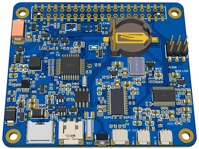

Active development
 OekoFor project
OekoFor project
ecoPi — autonomous acoustic monitoring
A modular acoustic monitoring system with solar-powered field hardware, on-device BirdNET detection, real-time networking and browser-based tools for ecological review.
Problem
AI-assisted, long-term acoustic monitoring
My role
Hardware R&D, front-end tools and interfaces